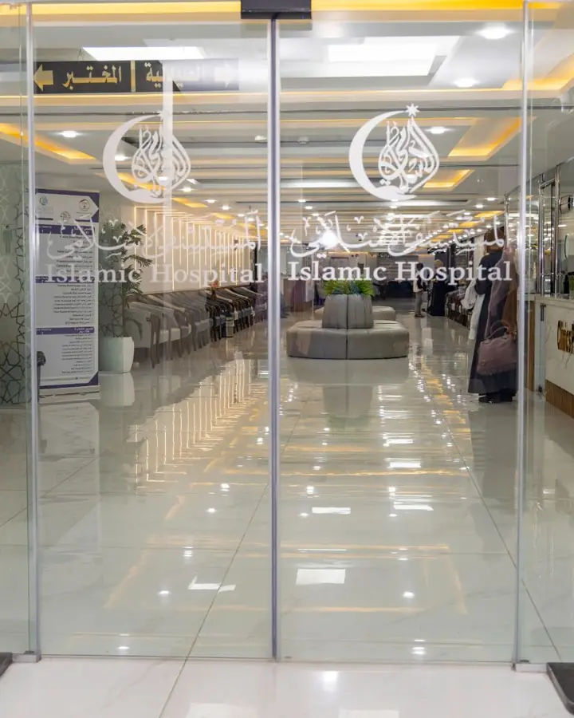
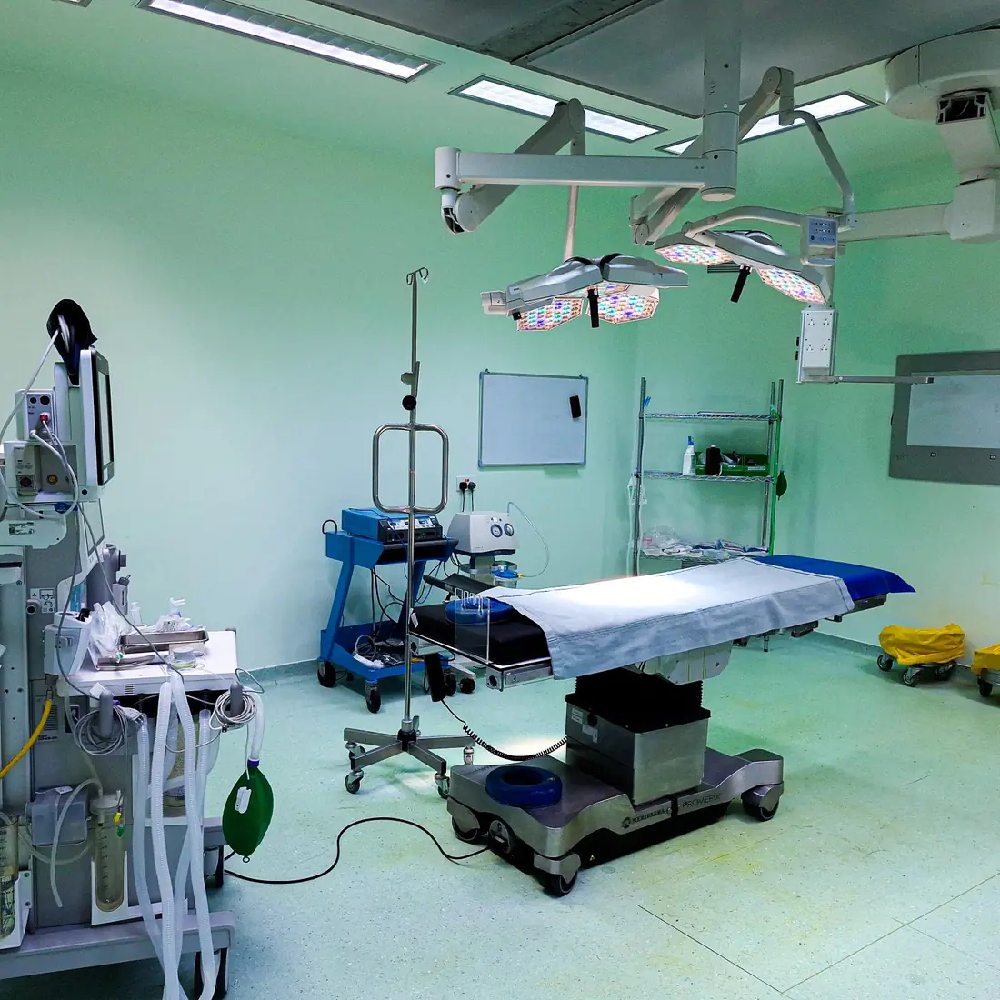

موقع إلكتروني جديد للمستشفى الإسلامي
واجهة أبسط تدلّ المراجع على وجهته من الصفحة الأولى، مع دليل كامل للأقسام وأوقات الدوام.
نسخة مراجعة غير منشورة. المحتوى بانتظار اعتماد إدارة المستشفى.
مؤسسة طبية تعليمية غير ربحية، والأكبر ضمن القطاع الطبي الخاص في الأردن. نستقبل المرضى والمراجعين من كل الفئات على قاعدة تكافؤ الفرص العلاجية.


ستة مراكز تخصصية تعمل إلى جانب أقسام المستشفى ووحداته العلاجية والتشخيصية.
واجهة أبسط تدلّ المراجع على وجهته من الصفحة الأولى، مع دليل كامل للأقسام وأوقات الدوام.
لوحات توعوية في منطقة الاستقبال تعرّف بالأعراض وتذكّر بأهمية الفحص الذاتي الشهري.
افتُتح المستشفى في الأول من أيلول 1982، واعتُمد لتدريب الأطباء من المجلس الطبي الأردني منذ عام 1987.
شارع كلية الشريعة 2، العبدلي، عمّان - الأردن